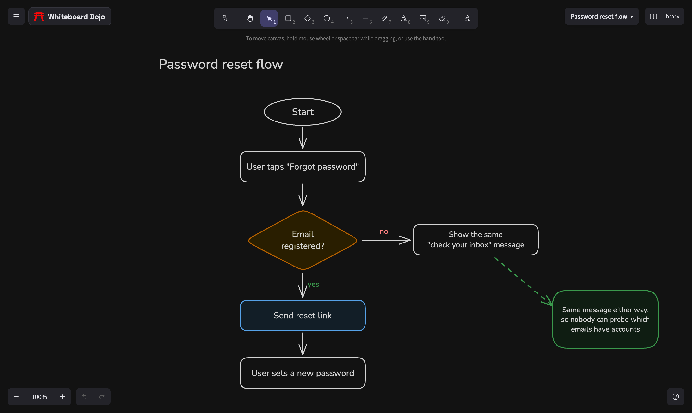

Advanced Whiteboard Guide: Shortcuts and Power Features
You can use a whiteboard with only a mouse, but the keyboard is where it gets fast. This guide covers the shortcuts and features that make the biggest difference on a free online whiteboard: building flowcharts in seconds, arrows that stay attached, aligning things neatly, and finding your way around a big board.
The Whiteboard Dojo board is built on Excalidraw, the open-source editor, so these shortcuts work the same way there too. Shortcuts below use Mac keys. On Windows and Linux, use Ctrl instead of Cmd and Alt instead of Option. Press ? on the board at any time to see the full list.

Every tool is one key away
| Tool | Key | Tool | Key |
|---|---|---|---|
| Select | V or 1 | Draw (pen) | P or 7 |
| Rectangle | R or 2 | Text | T or 8 |
| Diamond | D or 3 | Insert image | 9 |
| Ellipse | O or 4 | Eraser | E or 0 |
| Arrow | A or 5 | Frame | F |
| Line | L or 6 | Hand (pan) | H |
Normally the board switches back to the selection tool after you draw a shape. Press Q to keep the current tool active, which helps when you're drawing ten boxes in a row.
Build a flowchart without drawing arrows
This is the one most people don't know about. Select a shape and press Cmd + an arrow key. A new shape appears in that direction, already connected with an arrow. Press it again to keep going, or in another direction to branch. Use Option + an arrow key to move between the shapes in your flowchart without touching the mouse.
Then select any shape and press Enter to type its label. You can sketch a whole decision tree this way in a minute or two.
Arrows that stay connected
When you start or end an arrow on a shape, it attaches. Move the shape and the arrow follows. That's what keeps a diagram tidy while you rearrange it. A few more tricks:
- Hold Cmd while drawing if you want an arrow that doesn't attach to anything.
- For a curved arrow, press A, then click several points instead of dragging. The same works for lines with L.
- Select an arrow and press Cmd + Enter to edit its points.
- Double-click an arrow to add a label on it, like "yes" or "no".
Text and labels
- Double-click anywhere on the canvas to start typing.
- Select a shape and press Enter to put text inside it.
- Shift + F opens the font picker. Cmd + Shift + < and > change the size.
- New boards use a clean font and straight lines. If you want the hand-drawn look, change the font and the "Sloppiness" setting in the style panel.
Arrange, align and reuse
| Action | Shortcut |
|---|---|
| Align left, right, top, bottom | Cmd + Shift + arrow key |
| Duplicate | Cmd + D, or Option + drag |
| Group / ungroup | Cmd + G / Cmd + Shift + G |
| Bring forward / send backward | Cmd + ] / Cmd + [ |
| Copy style / paste style | Cmd + Option + C / V |
| Lock or unlock a shape | Cmd + Shift + L |
| Flip horizontally / vertically | Shift + H / Shift + V |
| Toggle grid / snap to objects | Cmd + ' / Option + S |
Copying styles is a big time saver: style one box the way you like, copy its style, then paste it onto twenty others. Locking is handy for a background or a frame you keep grabbing by accident.
Find your way around a big board
- Hold Space and drag to pan, or use the scroll wheel.
- Shift + 1 zooms to fit everything. Shift + 2 zooms to what you've selected.
- Cmd + F finds text anywhere on the board.
- Cmd + / opens the command palette. Type what you want to do instead of hunting for it.
Frames for structure
Press F and drag to make a frame. Anything inside moves with it, and you can export a single frame as its own image. Use frames for screens in a wireframe, slides in a talk, or sections of a workshop. The wireframing guide shows them in action.
Images
Drag an image file onto the board, paste a screenshot with Cmd + V, or press 9 to pick one. Double-click an image to crop it. Images are saved with the board, so they're still there next time.
Presenting your board
- K turns your cursor into a laser pointer for walking people through a board on a call.
- Option + Z is zen mode, which hides most of the interface.
- Option + R is view mode, so you can't move things by accident while presenting.
- Option + Shift + D switches between light and dark mode.
Your shape library
Select anything you reuse, right-click and choose Add to library. Open the Library panel in the top right to drag it onto any board. The library is shared by all your boards and stays between visits. You can also browse community libraries from that panel, with kits for wireframes, flowcharts, cloud architecture and more.
Files in and out
Save to… in the menu downloads the board as an .excalidraw file, and Import board opens one as a new board. Because it's the same format Excalidraw uses, you can move drawings between the two. Cmd + Shift + E exports an image, and Shift + Option + C copies your selection to the clipboard as a PNG, ready to paste into a doc or a chat.
Put it to work
The best way to make these stick is to use them under a bit of time pressure. Grab a prompt from the Dojo, set the timer and see how much of the flow you can map without reaching for the toolbar.